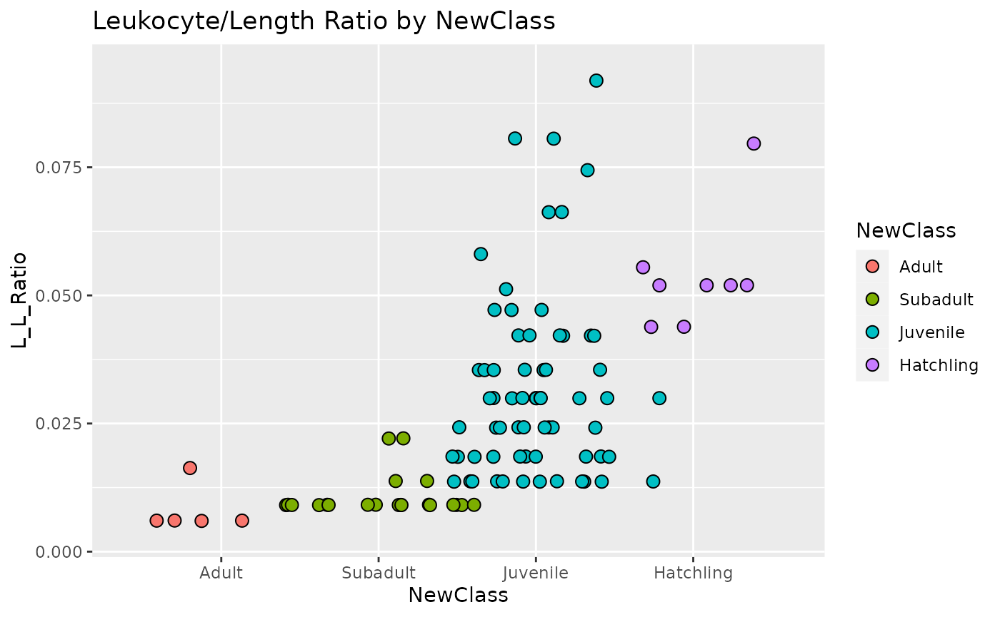
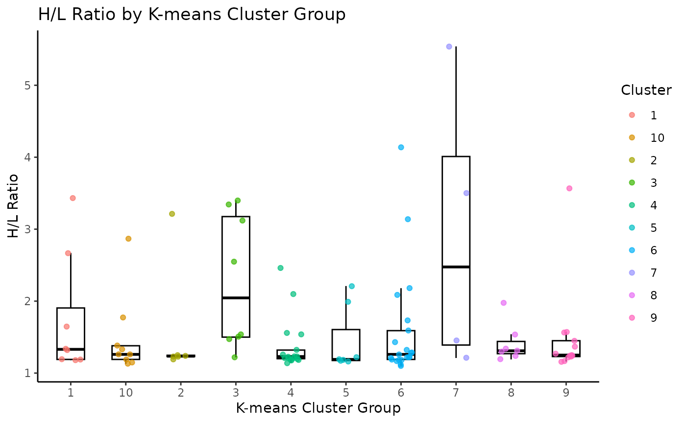

AlligatorDataExplorationTutorial.RmdThanks for checking out the johnson.pkg, an R package created for the GBIO 508 course at Southeastern Louisiana University. This package was originally designed for a fake alligator data set, this package provides a versatile set of functions for data manipulation, transformation, analysis, and visualization. Follow the tutorial below to see how it works!
You may need to install these packages if you have not already.
#install.packages("tidyverse")
#install.packages("broom")
#install.packages("knitr")
#install.packages("devtools")And load them
## ── Attaching core tidyverse packages ──────────────────────── tidyverse 2.0.0 ──
## ✔ dplyr 1.1.4 ✔ readr 2.1.4
## ✔ forcats 1.0.0 ✔ stringr 1.5.1
## ✔ ggplot2 3.4.4 ✔ tibble 3.2.1
## ✔ lubridate 1.9.3 ✔ tidyr 1.3.0
## ✔ purrr 1.0.2
## ── Conflicts ────────────────────────────────────────── tidyverse_conflicts() ──
## ✖ dplyr::filter() masks stats::filter()
## ✖ dplyr::lag() masks stats::lag()
## ℹ Use the conflicted package (<http://conflicted.r-lib.org/>) to force all conflicts to become errors## Loading required package: usethisLets start by downloading the data.
#install.packages("googlesheets4)
library(googlesheets4)
googlesheets4::gs4_deauth()
alligators <- read_sheet("https://docs.google.com/spreadsheets/d/1hNHAhO4OhXzpw6LG0WN_AZxaEUiyDhairunCXgpVLqM/edit?usp=sharing")## ✔ Reading from Alligator_Fake_Data_V2.## ✔ Range Alligator_Fake_Data_V2.Now lets download the package as well.
#Install the package from git hub
devtools::install_github("anthonyjohnson508/johnson_alligator.pkg")## Using github PAT from envvar GITHUB_PAT## Downloading GitHub repo anthonyjohnson508/johnson_alligator.pkg@HEAD##
## ── R CMD build ─────────────────────────────────────────────────────────────────
## * checking for file ‘/tmp/RtmpbSiskN/remotes9965e52830e/anthonyjohnson508-johnson_alligator.pkg-3001f57/DESCRIPTION’ ... OK
## * preparing ‘johnson.pkg’:
## * checking DESCRIPTION meta-information ... OK
## * checking for LF line-endings in source and make files and shell scripts
## * checking for empty or unneeded directories
## * building ‘johnson.pkg_0.1.tar.gz’
## Warning: invalid uid value replaced by that for user 'nobody'## Installing package into '/tmp/Rtmpg0mIYU/temp_libpath7bc1b2fe16d'
## (as 'lib' is unspecified)
library(johnson.pkg)Alright this package has six unique functions that help us learn about the data. Make sure to check out the README.md file associated with this package for more detailed description of each function. Lets begin with the first function which helps clean up the data set and makes it more usable for future functions.
Function 1: Reclassify Brief Description: The “reclassify” function was created to clean the data set by updating the classification of alligators from three size classes to four (hatching, juvenile, sub adult, and adult) based on total length measurements. This update aligns better with current practices among biologists. The function adds a new column, “NewClass,” to store the updated classification for future analysis.
#head(alligators)
alligators_reclassify <- reclassify(alligators, column_name = "TL")## Reclassification is correct!
#head(alligators_reclassify)Function 2: Calculating the Leukocyte to Length Ratio Brief Description: The “calc_LL_ratio” function transforms data by using a mathematical equation. This function works by dividing the values in the H:L ratio column (column_a) by the total length values (column_b). The result is stored in a new column named “L_L_Ratio”. Although it holds limited ecological significance for alligator biologists we will analyze this data later for fun!
alligators_reclassify <- calc_LL_ratio(alligators_reclassify, "H_L_Ratio", "TL")## No non-numeric or infinite values detected.
#head(alligators_reclassify)Function 3: ANOVA Comparing H:L Ratio by Class Brief Description: The “aov_HLclass” function is an extension of the “reclassify” function, in that it is designed for statistical analysis using a simple ANOVA based on categories that were previously created using “reclassify”. It assesses the relationship between the newly created classes and the H:L ratio. The output of this function is an ANOVA summary table that we can use to better understand our data.
aov_HLclass(alligators_reclassify)## ANOVA requirements met## Df Sum Sq Mean Sq F value Pr(>F)
## NewClass 3 0.98 0.3270 0.517 0.671
## Residuals 96 60.70 0.6323## Call:
## aov(formula = H_L_Ratio ~ NewClass, data = data)
##
## Terms:
## NewClass Residuals
## Sum of Squares 0.98090 60.69799
## Deg. of Freedom 3 96
##
## Residual standard error: 0.7951545
## Estimated effects may be unbalancedFunction 4: Cleveland Plot Comparing Alligator Size Class and Leukocyte:Length Ratio Brief Description: The “Cleveland_plot” function, draws on the “reclassify” and the “calc_LL_ratio” function, and is designed for data visualization. It creates a visual comparison of the relationship between L:L ratio and size class. To use the function, users need to assign the “NewClass” column to the x-axis and the “L_L_Ratio” column to the y-axis. Additionally, setting a binwidth, with a suggested starting value of “0.0050,” for the function to work!
plot <- Cleveland_plot(alligators_reclassify, "NewClass", "L_L_Ratio", 0.0050)## [1] "Both x and y-axis requirements were met."
print(plot)
Function 5: K-means Clustering to Create Spatial Groups Brief Description: Using machine learning the “Geo_Kluster” function creates functional groups based on the geographic location of each alligator. Essentially it builds groups of neighbors for subsequent analysis of spatial effects. Users define the number of clusters that they wish (k = “number of groups wanted”). This function outputs four new columns: “cluster” for unique cluster identification, “Gators_Per_Group” indicating the number of alligators in each group, and “center_lat” and “center_long” representing the geographic centers of the cluster groups which could be used in future mapping.
alligators_reclassify <- Geo_kluster(alligators_reclassify, lat_column = "Lat", long_column = "Long", k = 10)
#print(alligators_reclassify)Function 6: Plot Comparing H:L Ratio to Cluster Groups Brief Description: The “clusterbox” function is designed for visualizing the relationship between space use and stress, using H:L ratio as a stress proxy. It creates a box plot with overlaid jitter points to compare spatial groups (“cluster” created with Geo_Kluster) based on their stress levels. Users need to specify the appropriate columns for axis settings (x_column = “cluster”, y_column = “H_L_Ratio”).
clusterboxplot <- clusterbox(alligators_reclassify, x_column = "cluster", y_column = "H_L_Ratio",
ylab_text = "H/L Ratio", xlab_text = "K-means Cluster Group")## [1] "Both x and y-axis requirements were met."
print(clusterboxplot)
Congratulations! You now know a little bit of something about fake alligators, you are on your way to become a great biologist, keep up the good work!